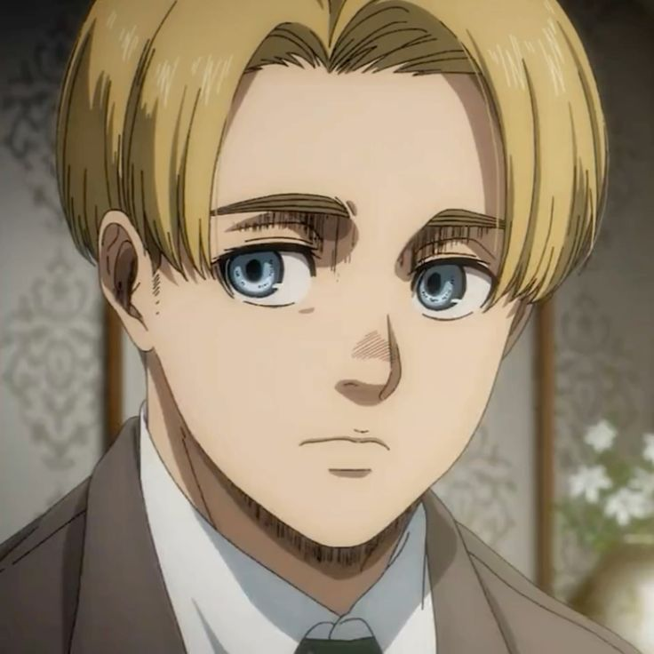
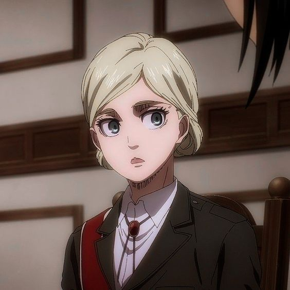
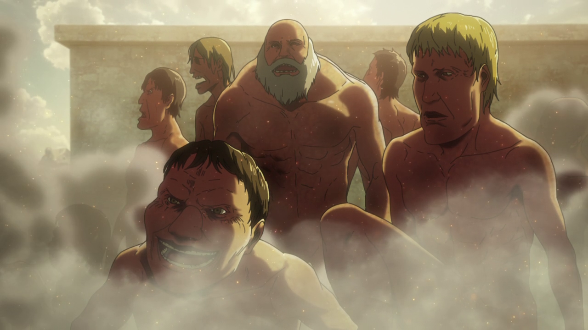
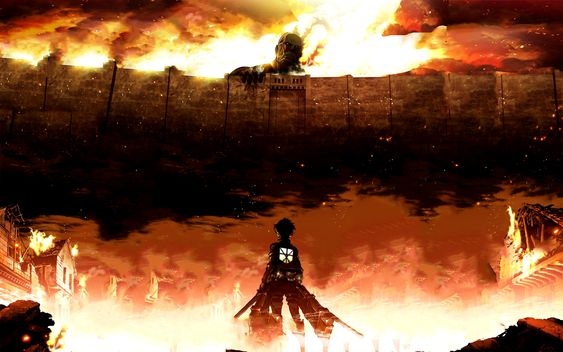
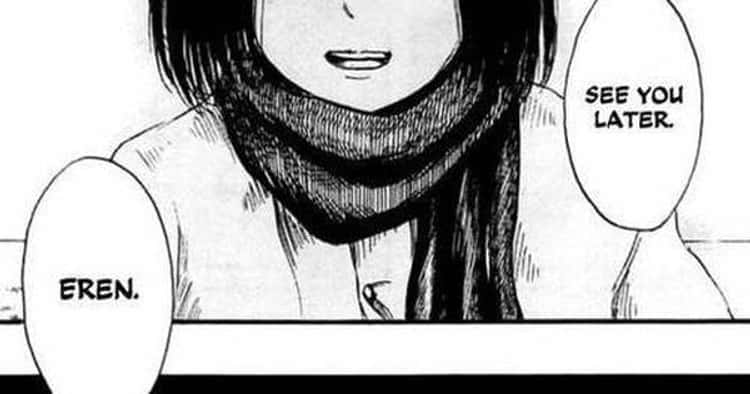
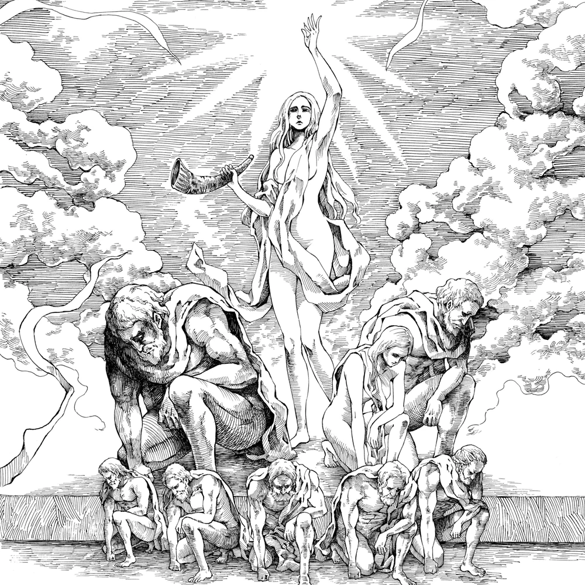
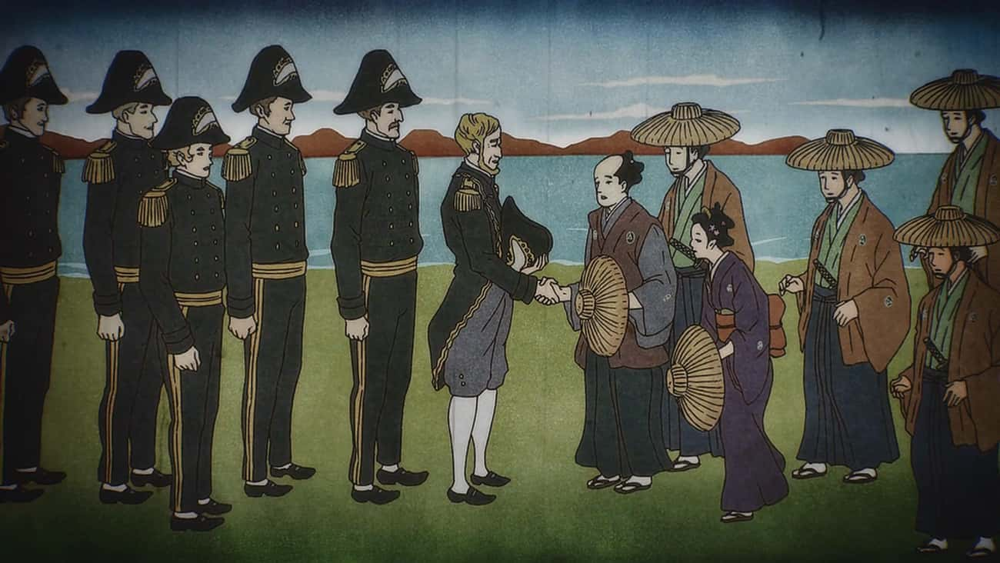
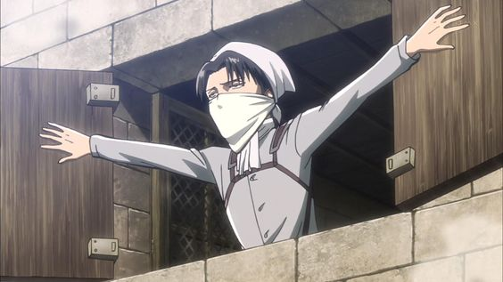
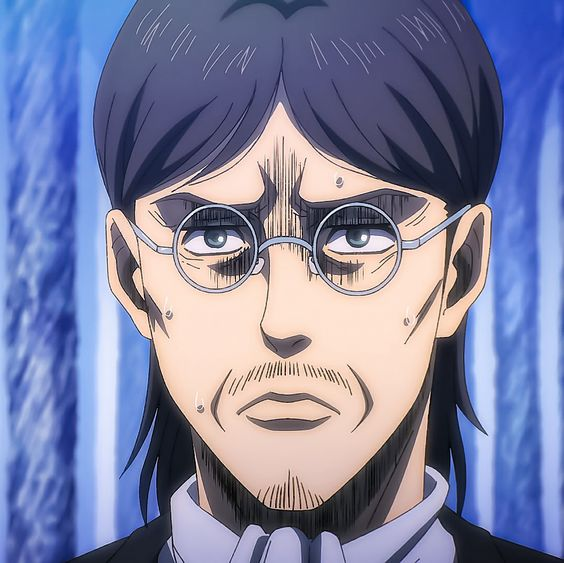
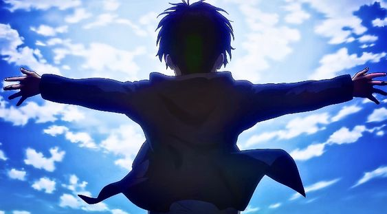

Armin Is The Narrator Of The Story

Marina Inoue and Josh Grelle are the Japanese and English voice actors of Armin Arlert.
The narrator of the show is voiced by the same pair that does Armin's Japanese and English voice. This fact made fans belive that
an older version of Armin is retelling the story, recalling all the tragic events that the viewrs are currently watching.
Historia's Child Is The New Beast Titan

when a titan shifter dies without tranfereing thier powers, a newborn Eldian will be the one to inherites
that titans shifters powers and seeing how zeke died without transfereing his powers, it has been speculated that Historia's new child is the new beast titan.
Titans Are Trying Revert Back To Humans

Fans know that titans only have one goal and thats to eat humans, but it was also shown that titans dont need
to eat humans inoder to survive. This lead some fans to belive that titans eating humans is then trying to turn back into humans. this general speculation amoungs fans
says that titans subconsciously know that eating a titan shifter will turn them back to normal.
Attack On Titan Is About WWII

Fans belive that attack on titan is an analogy of World War II. Reason being that many parts of the anime can be compared
to the events that took place in attack on titan. For example, the elements of the anime parallel other pieces of literature centered around the bombing of Hiroshima
The Time Loop Theory

Initially cooked up by u/real_life_corgi, the Time Loop Theory is an interesting idea that could be its own series - but it's not what ended up happening in AoT.
Here's a quick run-down: In the 700s, scientists create the Titan virus out of the remnants of Ymir. The government weaponizes the virus and creates a range of Titan varieties to shore up their military might. They lose the vaccine, and Titans run rampant.
The secrets of the vaccine are contained within Eren's dad's basement, but they are destroyed. Eren writes a letter to the future, which begins "To you, 2,000 years from now," in the hopes that the future world will be able to go back in time and fix things.
The twist is that Eren was actually sent from the year 2800 by his mother Mikasa. These events occur across multiple time loops, each one ending with the destruction of humanity.
A Titan Shifter Village Existed Outside Of The Walls

At first, Reiner and Bertholdt didn't describe their hometown in detail. Before fans knew about Marley and the Eldian internment zones, they came up with other ideas.
One common theory was that the two of them came from a village full of Titan shifters. This implies hundreds or even thousands of Titan shifters, which could have been exciting or overwhelming depending on how it was executed.
Eren Kruger Is Eren Jaeger

Eren Kruger was the person who started the Eldian Restorationist movement, as well as the person who initially held the power of the Attack Titan. He was a majorly important figure in Grisha Jaeger's life, which is why he named his second son after him.
Some fans thought Eren Kruger was Eren Jaeger - either in reincarnated form, or via time travel.
The main reason for this was that Kruger talked to Grisha about Mikasa and Armin, two people who hadn't even been born yet.
This was explained by the fact that the Attack Titan can see the future memories of those who will inherit it. That eliminated most support for the theory.
The Series Takes Place In The Real World

While Attack on Titan is certainly inspired by the real world, it doesn't actually take place in the real world. However, many fans thought AoT was set in a post-apocalyptic version of Earth.
One of the biggest reasons was Mikasa. She was referred to as "oriental," which is a real term that was once used to describe Asian people, but is now considered offensive. Some translations even called Mikasa Japanese, which is a real-world nationality.
It turns out that Orient is the fictional name of a continent that is loosely inspired by Asia, which is why Mikasa was called that. But she's from a nation called Hizuru, which is based on Japan, but isn't Japan itself. Japan doesn't exist in this world,
and neither do any other real-world nations.
The Ackermans Are The Ninth Titan

At this point, fans know that the Ninth Titan is the War Hammer Titan. Before that was revealed, some thought it might be not just one Titan, but a power possessed by several people - specifically, the members of the Ackerman clan.
The Ackerman clan was originally created via Titan science to protect the Eldian king. As a result, they have a number of unique abilities. When they rebelled against the king, they were nearly wiped out, leaving only a few surviving members.
Some people thought their abilities would culminate into what amounts to a Titan power. Considering how awesome Levi is, it's too bad he didn't get this particular spotlight.
Grisha Created The Titans

For a long time, nobody knew how the Titans had been created. While we know now that they began with Ymir Fritz and the Founding Titan, fans had ideas about it in the meantime. One popular theory was that Titans were created through scientific experimentation.
Because he was seen turning Eren into a Titan using a mysterious liquid, some thought Grisha was the one behind all of Titan-kind.
This seemed a little implausible due to Grisha's age, but a few reveals made it seem possible again. Ymir was once a mindless Titan, and she spent 60 years wandering aimlessly before becoming a Titan shifter with a human form that looked like the teenager she'd been when she was initially transformed.
Grisha had also been a Titan once, so he could have been much older than initially assumed.
But while that detail helped the theory a little, it still turned out not to be true.
Eren Wanted To Lose

Though Eren's goal may have seemed to have The Rumbling destroy the world outside of Paradis, it may actually be that he wanted to lose. He always wanted his loved ones to be free, and by having them save the world,
they would no longer be in danger from Marley or any of the other countries that feared the titans.
This would especially make sense since he allowed them to fight against him when he could have easily removed their powers since he is the founding Titan's inheritor.
Eren Goes Back In Time

The first time readers saw Eren was when he woke up to see Mikasa above him. He was confused as he had a nightmare that caused him to cry but couldn't remember anything about it except Mikasa's short hair.
In recent chapters, Eren as a child has been seen more, so he could very well be dreaming of the present and lose his memory when he wakes up.
To make this theory even more interesting, there was a mysterious scene in chapter 138.
Eren and Mikasa had escaped the war between Paradis and Marley and started living on their own. The last thing that Mikasa says in this scene is,
"See you later... Eren", which she also said in his dream.
FunFacts about attack on titan you didnt know
FunFacts about jujustu kaisen you didnt know